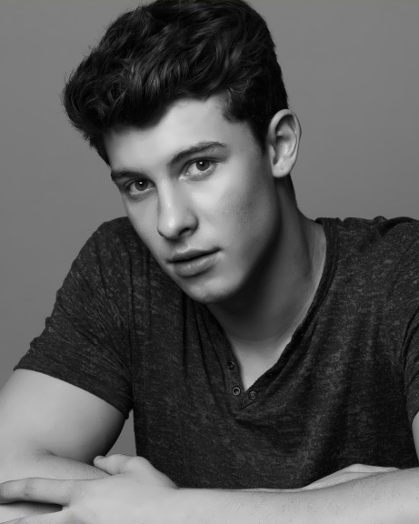

Camilla Cabello - Havana
Selena Gomez - Good For You
BTS - Idol
Troy Sivan - Youth
Ed Sheeran купить билеты на 50% дешевле прямо сейчас!
http:\\www.edsheeranspb.ru
a-ha в Санкт-Петербурге! Лучшие места у нас!
http:\\www.ahaspb.ru
Бесплатная музыка без рекламы 24 часа 7 дней в неделю. Слушайте и скачивайте!
http:\\www.musicfreeforme.net
Колонки Samsung со скидкой 20%. Успейте купить!
http:\\www.samsung.com
Ed Sheeran купить билеты на 50% дешевле прямо сейчас!
http:\\www.edsheeranspb.ru
a-ha в Санкт-Петербурге! Лучшие места у нас!
http:\\www.ahaspb.ru

Мендес начинал с того, что делал кавер-версии известных песен и размещал их в Vine, благодаря чему приобрёл немало поклонников. Его часто сравнивали с Эдом Шираном и Джастином Бибером. Позже Мендес участвовал в туре MagCon вместе с другими молодыми исполнителями, прославившимися благодаря социальным сетям. В 2014 году Шон подписал контракт с лейблом Island Records, в том же году выпустил дебютный сингл «Life of the Party». Хотя американские радиостанции поначалу её проигнорировали, песня 15-летнего певца всё же оказалась на 24-м месте в хит-параде Billboard Hot 100, что сделало Мендеса самым молодым исполнителем, чей дебютный сингл попал в число 25 лучших. Песня вышла также в The Shawn Mendes EP, составленного из четырёх композиций, который продался в количестве свыше 100 тысяч копий и достиг пятой строчки в хит-параде Billboard.
Полноценный дебютный альбом Мендеса, Handwritten, вышел 14 апреля 2015 года, вскоре после сингла «Something Big». Альбом хорошо продавался и дебютировал на первой строчке хит-парадов Канады и США. В 2015 году песня Мендеса «Believe» вошла в саундтрек фантастического мюзикла канала Disney «Наследники». В мае-октябре 2015 года Мендес выступал на разогреве у Тейлор Свифт на её концертах в Северной Америке в рамках мирового тура «1989».
20 ноября 2015 года дебютный альбом Мендеса был переиздан под названием Handwritten Revisited. В него вошло пять концертных записей и четыре новых песни, включая композицию «I Know What You Did Last Summer», написанную и исполненную Шоном в паре с Камилой Кабелло из группы Fifth Harmony. В январе 2016 года Мендес сыграл эпизодическую роль в телесериале «Сотня», где исполнил песню «Add It Up» группы Violent Femmes. Тогда же его сингл «Stitches» достиг первой строчки в британском хит-параде. Также в январе 2016 года Шон заключил контракт с модельным агентством Wilhelmina. В марте 2016 года Мендес отправился в новый концертный тур по Северной Америке и Европе в качестве хедлайнера.
| Как вас зовут? | |
| Ваш адрес электронной почты | |
| Тип уведомлений | Все Только о продаже билетов |